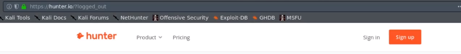

1. hunter.io : Find email addresses in seconds Hunter (Email Hunter)
this web site help to find e mail address assciated with organization .
it also help to find pattern between e mail ( e mail format)


you can log in at huter.io and get some more information

2. phonebook.cz : Phonebook.cz - Intelligence X
this tools list out all domain , email addres and url for given input domain

for tesla.com this is the result
here we can see e mail format accoding to names.

3. voilebert.com - email finder : Email Finder - Find anyones email address — Norbert (voilanorbert.com)

4. clearbit connect : enacle it from your e mail id (google)


search tesla


now , it is not possible that all email id we find are active to to check and verify them we can use these tools
1.email Hippo : Email Address Verifier - Validate and Check In Real Time | verifyemailaddress.io (emailhippo.com)

2. email checker.net : Email Checker - Verify Email Address Online (email-checker.net)

3. forgot password ;
try to login by email to check if it is valid or not
-> also try forgot password , it will help to identfy assciate account , user ,and more info .